บทที่ 7 / 29
คุชิบะซิตี้<Vermilion City>
❖
พอมาถึงเมืองนี้ให้เราไปยังโปเกมอนเซนเตอร์ คุยกับผู้หญิงผมม่วง จะได้ VS Seeker มา (เป็นKeyItem สำหรับหาเทรนเนอร์ที่อยากสู้กับเราอีกครั้ง)
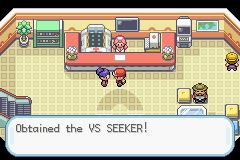
จากนั้นให้แวะบ้านที่อยู่ข้างๆโปเกมอนเซนเตอร์ คุยกับนักตกปลาจะได้เบ็ดตกปลา Old Rod
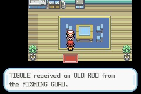
แล้วให้ไปโปเกมอนแฟนคลับ(บ้านที่อยู่ด้านซ้ายสุดแนวเดียวกับร้านShop) คุยกับชายที่นั่งอยู่ด้านใน แล้ว ตอบตกลง ทนฟังจนจบ ก็จะได้ใบรับรองจักรยาน<Bike Voucher> เราสามารถไปขอจักรยานได้ที่เมืองฮานาดะซิตี้ได้เลย (บ้านที่อยู่ด้านซ้ายสุดแนวเดียวกับร้านShop) เย้ๆๆๆได้มาเเล้วจักยานคันละ ล้าน ^^
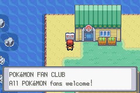
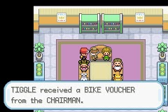
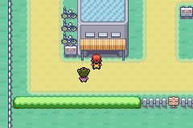
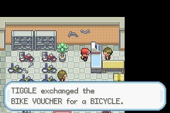
"เย้ๆๆๆๆได้จักยานเเล้ว"
จากนั้นให้เราเดินลงมาทิศใต้แล้วเข้าเรือS.S.Anne ภายในเรือจะมีเทรนเนอร์และไอเท็มให้เก็บมากมาย (สำรวจถังขยะให้ดีล่ะ) เราสามารถพักฟื้นโปเกมอนของเราได้ที่ห้องที่2 นับจากขวา ชั้นแรกของเรือ โดยคุยกับผู้หญิงในห้อง
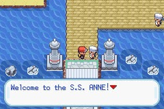
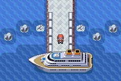
จากนั้นให้เราไปที่ห้องของกัปตัน อยู่ทางขวา ของชั้นแรกของเรือ ก่อนจะผ่านจะเจอคู่แข่งอีกครั้ง ก็จะคล้ายๆของเดิมคือเลเวล16-20 พอสู้เสร็จแล้วให้เราเข้าไปในห้องกัปตัน(อยู่ชั้นบน) จะพบว่าเขาเมาเรืออยู่ ให้เราไปคุยเพื่อช่วยเขา เขาจะให้HM01 Cutมา ตอนนี้ให้เราออกจากเรือได้แล้ว แล้วเรือจะออกจากท่าไป ให้โปเกมอนตัวใดตัวหนึ่งจำท่าHM01 เอาไว้ เพื่อตัดต้นไม้ที่ขวางทางของยิมออก
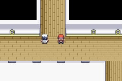
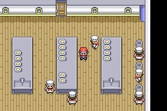
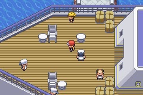
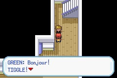
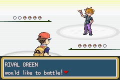
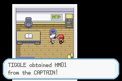
ในยิมเราจะต้องหาสวิตซ์เพื่อเปิดประตู โดยคุยถังขยะ พอเจอแล้ว อันที่2จะอยู่ใกล้อันที่1 หาผิดต้องหาใหม่ ยิมนี้จะใช้โปเกมอนไฟฟ้า ให้ใช้โปเกมอนประเภทดินในการต่อสู้ หัวหน้ายิมชื่อแมททิส<Lt.Surge>
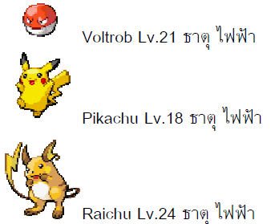
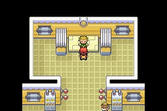
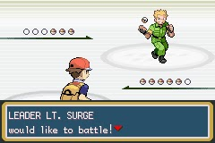
เมื่อชนะแล้วเราจะได้ Thunderbadge ที่เพิ่มความเร็วโปเกมอนของเรา และทำให้ใช้ท่าบินได้ พร้อมตังค์2400 เยน และTM34 Shockwave
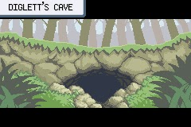
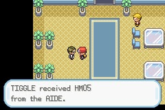
พอสู้เสร็จแล้วให้เราย้อนกลับไปเอาท่าHM05ซึ่งเป็นท่าแฟลช โดยทำดังต่อไปนี้ เข้าถ้ำดิกด้า<Diglett’sCave> (ทางตะวันออกของเมือง ใกล้ๆกับท่าเรือ) พอไปเสร็จ ให้เราเดินลงทิศใต้ ตัดต้นไม้ผ่านมาเรื่อยๆ จนถึงประตูทางผ่าน ด้านในจะมีผู้ช่วยดร.อยู่ ให้คุยกับเขา มีข้อแม้อยู่ว่า เราต้องเคยมีโปเกมอนไม่ต่ำกว่า10ตัว หลังจากนั้นขึ้นไปด้านบน เข้าเมืองนิบิอีกครั้ง (ท่านี้ไว้ใช้ให้ถ้ำที่มืดมองเห็น)